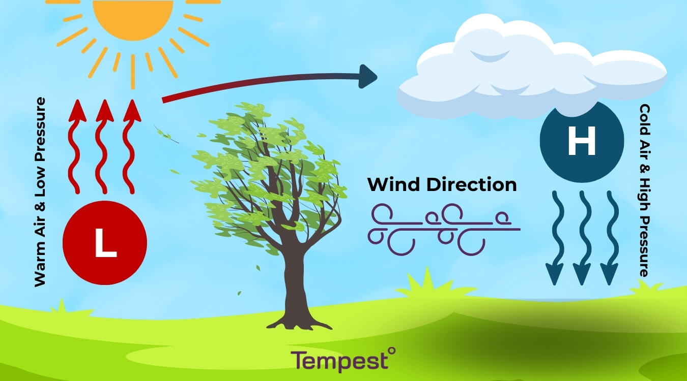
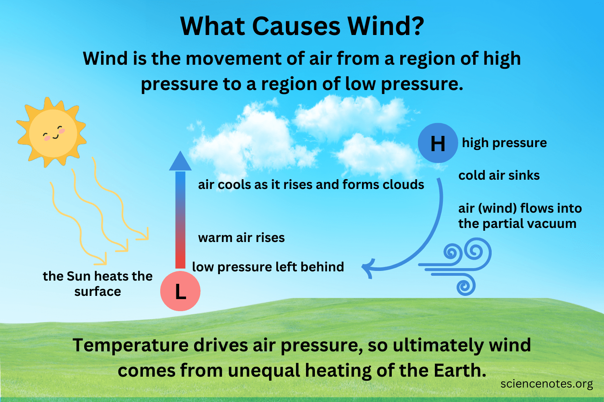
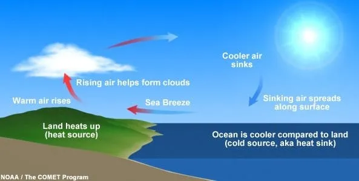

Wind usually causes because the sun heats earth's surface unevenly, that is temperature difference that equals pressure changing high and low, so cool air moves horizontally to fix it. This means the larger the pressure difference the stronger the wind will be.
You can measure the wind by its speed in km/h or m/s; scientists use an anemometer to measure the speed. There is a difference between winds, there is the wind speed and the gust; The difference is that wind speed is the average speed that was measured in a long period of time and the gust is the sudden increase of the wind’s speed, that just takes a few seconds to find out.
Climate change impacts the wind by creating stronger sand and dust storms, this strong wind storm impacts over 330 million people annually, this exposes communities to harmful particulate matter and toxic materials; Plus the dust storms that climate change created don't carry only sand and dust it also brings pollution with them that can cause respiration and cardiovascular illness.


